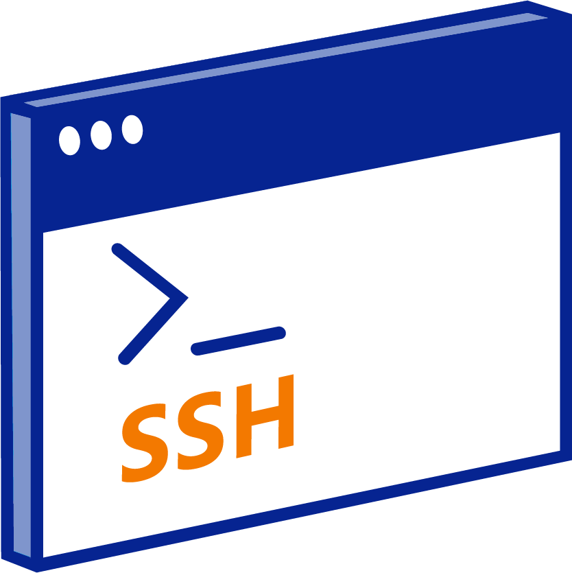

Networking is the lifeblood of modern computing, and Linux, with its wide range of
tools, offers amazing control over network interfaces, connections, and security. Recently, as I’ve
explored
Linux network programming
, I’ve focused on how Linux manages not just local resources but also its interactions with other
systems on a network. The ability to fine-tune network parameters, monitor traffic, and secure
communications with robust built-in tools makes Linux a top choice for many IT professionals.
With powerful utilities like
ifconfig
,
iptables
, and
Wireshark<
, Linux provides an extensive toolkit for
managing and troubleshooting networks.
Kali Linux Networking Tools
Kali Linux, known for its penetration testing capabilities, comes with a suite of powerful networking
tools. One tool that really stands out is
Netdiscover
, which helps me effortlessly scan and discover devices on the local network. Tools like
nmap
allow for comprehensive network scanning, helping me analyze open ports, the services running on them,
and potential vulnerabilities in the network. The integration of these tools in Kali Linux makes it an
essential platform for anyone serious about network security.
The Power of iptables and Firewalls
Recently, I’ve spent a lot of time with
iptables
. This firewall and packet filtering framework lets me set custom rules for managing incoming and
outgoing traffic. Learning to create and apply these rules has given me a deeper understanding of how
Linux secures communication with other systems. The elegance of Linux’s ability to provide such granular
control over data packets is truly impressive.
Bettercap and Network Security Auditing
As I continue my exploration of Linux, I’ve been diving into network security with tools like
Bettercap
. It’s a versatile tool designed for network monitoring, attacks, and testing, allowing me to audit my
network for potential vulnerabilities. By capturing network packets and examining the data, I’m starting
to understand how easily sensitive information can be exposed on an unsecured network. This has really
made me appreciate the importance of encryption and secure communication protocols like SSL/TLS.
Securing SSH Connections
You can’t talk about Linux security without mentioning
Secure Shell (SSH)
. SSH has become a crucial tool for remote system administration. Whether I’m managing a remote server
or accessing a personal machine over a secure connection, SSH keeps my data safe from prying eyes.
Recently, I’ve been experimenting with key-based authentication, which uses cryptographic key pairs
instead of passwords. This not only boosts security but also simplifies the login process.
